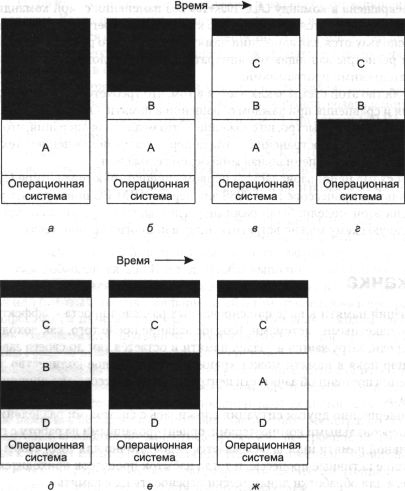

Подкачка
Организация памяти в виде фиксированных разделов проста и эффективна для работы
с пакетными системами. Каждое задание после того, как доходит до начала очереди,
загружается в раздел памяти и остается там до своего завершения. До тех пор
пока в памяти может храниться достаточное количество задач для обеспечения постоянной
занятости центрального процессора, нет причин что-либо усложнять.
Но совершенно другая ситуация сложилась с системами разделения времени или
персональными компьютерами, ориентированными на работу с графикой. Оперативной
памяти иногда оказывается недостаточно для того, чтобы вместить все текущие
активные процессы, и тогда избыток процессов приходится хранить на диске, а
для обработки динамически переносить их в память.
Существуют два основных подхода к управлению памятью, зависящие (отчасти)
от доступного аппаратного обеспечения. Самая простая стратегия, называемая свопингом
(swapping) или обычной подкачкой, заключается в том, что каждый процесс
полностью переносится в память, работает некоторое время и затем целиком возвращается
на диск. Другая стратегия, носящая название виртуальной памяти, позволяет
программам работать даже тогда, когда они только частично находятся в оперативной
памяти. Ниже мы изучим свопинг, а вторую стратегию рассмотрим в разделе «Виртуальная
память» данной главы.
Работа системы свопинга проиллюстрирована на рис. 4.5. На начальной стадии
в памяти находится только процесс А. Затем создаются или загружаются
с диска процессы В и С. На рис. 4.5, г процесс А выгружается
на диск. Затем появляется процесс D, а процесс В завершается.
Наконец, процесс А снова возвращается в память. Так как теперь процесс
А имеет другое размещение в памяти, его адреса должны быть перенастроены
или программно во время загрузки в память, или (более заманчивый вариант) аппаратно
во время выполнения программы.

Рис. 4.5. Распределение памяти изменяется по мере того, как процессы
поступают
в память и покидают ее. Заштрихованы неиспользуемые области памяти
Основная разница между фиксированными разделами на рис. 4.2 и непостоянными
разделами на рис. 4.5 заключается в том, что во втором случае количество, размещение
и размер разделов изменяются динамически по мере поступления и завершения процессов,
тогда как в первом варианте они фиксированы. Гибкость схемы, в которой нет ограничений,
связанных с определенным количеством разделов, и каждый из разделов может быть
очень большим или совсем маленьким, улучшает использование памяти, но, кроме
того, усложняет операции размещения процессов и освобождения памяти, а также
отслеживание происходящих изменений.
Когда в результате подкачки процессов с диска в памяти появляется множество
неиспользованных фрагментов, их можно объединить в один большой участок, передвинув
все процессы в сторону младших адресов настолько, насколько это возможно. Такая
операция называется уплотнением или сжатием памяти. Обычно ее не выполняют,
потому что на нее уходит много времени работы процессора. Например, на машине
с 256 Мбайт оперативной памяти, которая может копировать 4 байта за 40 нс, уплотнение
всей памяти займет около 2,7 с.
Еще один момент, на который стоит обратить внимание: сколько памяти должно
быть предоставлено процессу, когда он создается или скачивается с диска? Если
процесс имеет фиксированный никогда не изменяющийся размер, размещение происходит
просто: операционная система предоставляет точно необходимое количество памяти,
ни больше, ни меньше, чем нужно.
Однако если область данных процесса может расти, например, в результате динамического
распределения памяти из кучи, как происходит во
многих языках программирования, проблема предоставления памяти возникает каждый
раз, когда процесс пытается увеличиться. Когда участок неиспользованной памяти
расположен рядом с процессом, его можно отдать в пользу процесса, таким образом,
позволив процессу вырасти на размер этого участка. Если же процесс соседствует
с другим процессом, для его увеличения нужно или переместить достаточно большой
свободный участок памяти, или перекачать на диск один или больше процессов,
чтобы создать незанятый фрагмент достаточного размера. Если процесс не может
расти в памяти, а область на диске, предоставленная для подкачки, переполнена,
процесс будет вынужден ждать освобождения памяти или же будет уничтожен.
Если предположить, что большинство процессов будут увеличиваться во время
работы, вероятно, сразу стоит предоставлять им немного больше памяти, чем требуется,
а всякий раз, когда процесс скачивается на диск или перемещается в памяти, обрабатывать
служебные данные, связанные с перемещением или подкачкой процессов, больше не
умещающихся в предоставленной им памяти. Но когда процесс выгружается на диск,
должна скачиваться только действительно используемая часть памяти, так как очень
расточительно также перемещать и дополнительную память. На рис. 4.6, а
можно увидеть конфигурацию памяти с предоставлением пространства для роста двух
процессов.
Если процесс может иметь два увеличивающихся сегмента, например сегмент данных,
используемый как куча для динамически назначаемых и освобождаемых переменных,
и сегмент стека для обычных локальных переменных и возвращаемых адресов, предлагается
альтернативная схема распределения памяти, показанная на рис. 4.6, б.
Здесь мы видим, что у каждого процесса вверху предоставленной ему области памяти
находится стек, который расширяется вниз, и сегмент данных, расположенный отдельно
от текста программы, который увеличивается вверх. Область памяти между ними
разрешено использовать для любого сегмента. Если ее становится недостаточно,
то процесс нужно или перенести на другое, большее свободное место, или выгрузить
на диск до появления свободного пространства необходимого размера, или уничтожить.
Рис. 4.6. Предоставление пространства для роста области данных (а);
предоставление пространства для роста стека и области данных (б)
Управление памятью с помощью битовых массивов
Если память выделяется динамически, этим процессом должна управлять операционная
система. Существует два способа учета использования памяти: битовые массивы,
иногда называемые битовыми картами, и списки свободных участков. В этом и следующем
разделах мы по очереди рассмотрим оба метода.
При работе с битовым массивом память разделяется на единичные блоки размещения
размером от нескольких слов до нескольких килобайт. В битовой карте каждому
свободному блоку соответствует один бит, равный нулю, а каждому занятому блоку
— бит, установленный в 1 (или наоборот). На рис. 4.7 показана часть памяти и
соответствующий ей битовый массив. Черточками отмечены единичные блоки памяти.
Заштрихованные области (0 в битовой карте) свободны.
Размер единичного блока представляет собой важный вопрос стадии разработки
системы. Чем меньше единичный блок, тем больше потребуется битовый массив. Однако
даже при маленьком единичном блоке, равном четырем байтам, для 32 битов памяти
потребуется 1 бит в карте. Тогда память размером в 32n будет использовать n
битов в карте, таким образом, битовая карта займет всего лишь 1/33 часть памяти.
Если выбираются большие единичные блоки, битовая карта становится меньше, но
при этом может теряться существенная часть памяти в последнем блоке каждого
процесса (если размер процесса не кратен размеру единичного блока).
Битовый массив предоставляет простой способ отслеживания слов в памяти фиксированного
объема, потому что размер битовой карты зависит только от размеров памяти и
единичного блока. Основная проблема, возникающая при этой схеме, заключается
в том, что при решении переместить k-блочный процесс в память модуль управления
памяти должен найти в битовой карте серию из k следующих друг за другом
нулевых битов. Поиск серии заданной длины в битовой карте является медленной
операцией (так как искомая последовательность битов может пересекать границы
слов в битовом массиве). В этом состоит аргумент против битовых карт.
Рис. 4.7. Часть памяти с пятью процессами и тремя свободными областями
(а);
соответствующая битовая карта (б); та же информация в виде списка (в)
Управление памятью с помощью связных списков
Другой способ отслеживания состояния памяти предоставляет поддержка связных
списков занятых и свободных фрагментов памяти, где сегментом является или процесс,
или участок между двумя процессами. Память, показанная на рис. 4.7, а,
представлена в виде связного списка сегментов на рис. 4.7, в. Каждая
запись в списке указывает, является ли область памяти свободной (Н, от hole
— дыра) или занятой процессом (Р, process); адрес, с которого начинается эта
область; ее длину; содержит указатель на следующую запись.
В нашем примере список отсортирован по адресам. Такая сортировка имеет следующее
преимущество: когда процесс завершается или скачивается на диск, изменение списка
представляет собой несложную операцию. Закончившийся процесс обычно имеет двух
соседей (кроме тех случаев, когда он находится на самом верху или на дне памяти).
Соседями могут быть процессы или свободные фрагменты, что приводит к четырем
комбинациям, показанным на рис. 4.8. На рис. 4.8, а корректировка списка
требует замены Р на Н. На рис. 4.8, б, в две записи соединяются в одну,
а список становится на запись короче. На рис. 4.8, г объединяются три
записи, а из списка удаляются два пункта. Так как ячейка таблицы процессов для
завершившегося процесса обычно будет непосредственно указывать на запись в списке
для этого процесса, возможно, удобнее иметь список с двумя связями, чем с одной
(последний показан на рис. 4.7, в). Такая структура упрощает поиск предыдущей
записи и оценку возможности соединения.

Рис. 4.8. Четыре комбинации соседей для завершения процесса X
Если процессы и свободные участки хранятся в списке, отсортированном по адресам,
существует несколько алгоритмов для предоставления памяти процессу, создаваемому
заново (или для существующих процессов, скачиваемых с диска). Допустим, менеджер
памяти знает, сколько памяти нужно предоставить. Простейший алгоритм представляет
собой выбор первого подходящего участка. Менеджер памяти просматривает
список областей до тех пор, пока не находит достаточно большой свободный участок.
Затем этот участок делится на две части: одна отдается процессу, а другая остается
неиспользуемой. Так происходит всегда, кроме статистически нереального случая
точного соответствия свободного участка и процесса. Это быстрый алгоритм, потому
что поиск уменьшен настолько, насколько возможно.
Алгоритм «следующий подходящий участок» действует с минимальными
отличиями от правила «первый подходящий». Он работает так же, как
и первый алгоритм, но всякий раз, когда находит соответствующий свободный фрагмент,
он запоминает его адрес. И когда алгоритм в следующий раз вызывается для поиска,
он стартует с того самого места, где остановился в прошлый раз вместо того,
чтобы каждый раз начинать поиск с начала списка, как это делает алгоритм «первый
подходящий». Моделирование работы алгоритма, произведенное Бэйсом, показало,
что производительность схемы «следующий подходящий» немного хуже,
чем «первый подходящий» [21].
Другой хорошо известный алгоритм называется «самый подходящий участок».
Он выполняет поиск по всему списку и выбирает наименьший по размеру подходящий
свободный фрагмент. Вместо того чтобы делить большую незанятую область, которая
может понадобиться позже, этот алгоритм пытается найти участок, близко подходящий
к действительно необходимым размерам.
Чтобы привести пример работы алгоритмов «первый подходящий» и
«самый подходящий», снова обратимся к рис. 4.7. Если необходим блок
размером 2, правило «первый подходящий» предоставит область по адресу
5, а схема «самый подходящий» разместит процесс в свободном фрагменте
по адресу 18.
Алгоритм «самый подходящий» медленнее «первого подходящего»,
потому что каждый раз он должен производить поиск во всем списке. Но, что немного
удивительно, он выдает еще более плохие результаты, чем «первый подходящий»
или «следующий подходящий», поскольку стремится заполнить память
очень маленькими, бесполезными свободными областями, то есть фрагментирует память.
Алгоритм «первый подходящий» в среднем создает большие свободные
участки.
Пытаясь решить проблему разделения памяти на практически точно совпадающие
с процессом области и маленькие свободные фрагменты, можно задуматься об алгоритме
«самый неподходящий участок». Он всегда выбирает самый большой
свободный участок, от которого после разделения остается область достаточного
размера и ее можно использовать в дальнейшем. Однако моделирование показало,
что это также не очень хорошая идея.
Все четыре алгоритма можно ускорить, если поддерживать отдельные списки для
процессов и свободных областей. Тогда поиск будет производиться только среди
незанятых фрагментов. Неизбежная цена, которую нужно заплатить за увеличение
скорости при размещении процесса в памяти, заключается в дополнительной сложности
и замедлении при освобождении областей памяти, так как ставший свободным фрагмент
необходимо удалить из списка процессов и вставить в список незанятых участков.
Если для процессов и свободных фрагментов поддерживаются отдельные списки,
то последний можно отсортировать по размеру, тогда алгоритм «самый подходящий»
будет работать быстрее. Когда он выполняет поиск в списке свободных фрагментов
от самого маленького к самому большому, то, как только находит подходящую незанятую
область, алгоритм уже знает, что она — наименьшая из тех, в которых может поместиться
задание, то есть наилучшая. В отличие от схемы с одним списком, дальнейший поиск
не требуется. Таким образом, если список свободных фрагментов отсортирован по
размеру, схемы «первый подходящий» и «самый подходящий»
одинаково быстры, а алгоритм «следующий подходящий» не имеет смысла.
При поддержке отдельных списков для процессов и свободных фрагментов возможна
небольшая оптимизация. Вместо создания отдельного набора структур данных для
списка свободных участков, как это сделано на рис. 4.7, в, можно использовать
сами свободные области. Первое слово каждого незанятого фрагмента может содержать
размер фрагмента, а второе слово может указывать на следующую запись. Узлы списка
на рис. 4.7, в, для которых требовались три слова и один бит (Р/Н), больше не
нужны.
Еще один алгоритм распределения называется «быстрый подходящий»,
он поддерживает отдельные списки для некоторых из наиболее часто запрашиваемых
размеров. Например, могла бы существовать таблица с п записями, в которой
первая запись указывает на начало списка свободных фрагментов размером 4 Кбайт,
вторая запись является указателем на список незанятых областей размером 8 Кбайт,
третья — 12 Кбайт и т. д. Свободный фрагмент размером, скажем, 21 байт, мог
бы располагаться или в списке областей 20 Кбайт или в специальном списке участков
дополнительных размеров. При использовании правила «быстрый подходящий»
поиск фрагмента требуемого размера происходит чрезвычайно быстро. Но этот алгоритм
имеет тот же самый недостаток, что и все схемы, которые сортируют свободные
области по размеру, а именно: если процесс завершается или выгружается на диск,
поиск его соседей с целью узнать, возможно ли их соединение, является дорогой
операцией. А если не производить слияния областей, память очень скоро окажется
разбитой на огромное число маленьких свободных фрагментов, в которые не поместится
ни один процесс.